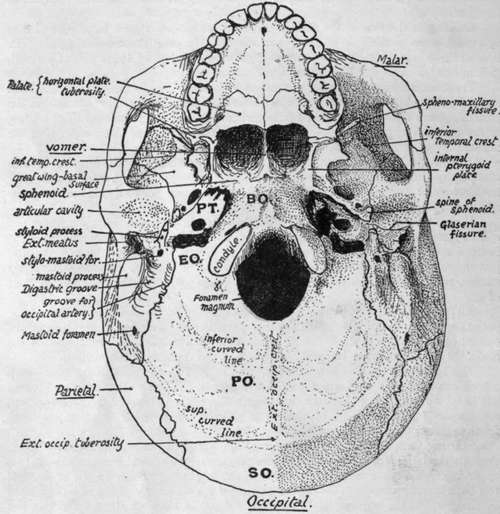

Cranial Bones. Part 2
Description
This section is from the book "The Anatomy Of The Human Skeleton", by J. Ernest Frazer. Also available from Amazon: The anatomy of the human skeleton.
Cranial Bones. Part 2
All the cranial bones that have been mentioned so far, with the exception of the parietals, are concerned also by their other parts in the formation of the base of the cranial cavity-in fact, there are no other bones there, with the exception of the ethmoid, which fills in the interval between the orbital plates of the frontal.
The basal view (norma basalis) of the skull shows us the constituent bones with a little examination : they are not so clearly defined as on the other aspects, because the basal surface, being that looking towards the neck, is covered by processes and roughnesses for attachments of various structures and pierced by numerous holes for the passage of vessels and nerves (Fig. 161).
, Starting from the back, we notice that the occipital bone turns forward below, presents the large foramen magmtm for the passage of the central nervous axis and its appendages, and narrows in front of this to a thick bar of bone. In the adult skull this bone is continuous with the central portion of the sphenoid and has to be separated by the saw, but the termination of the occipital can be taken as about an inch or less in front of the margin of the foramen magnum.
The different parts of the occipital bone can now be recognised : the portion in front of the foramen is the basi-occipital; the part that projects outwards on each side • of the foramen is the ex-occipital, frequently termed the jugular process, because it forms the back wall of the jugular foramen, from which the internal jugular vein and certain nerves leave the skull. The part behind the foramen is the post-occipital, and this is seen to be roughened by aponeurotic attachments, showing upper and lower curved lines and an external occipital crest running down from an external tuberosity.
This is the basal part of the bone, but behind the superior curved line the bone turns up on the back of the skull between the parietals, and this part is often termed the supra-occipital. At the junction of basi- and ex-occipitals the two articular condyles for the Atlas are seen on the margins of the foramen magnum.
To the outer side of the ex-occipitals the temporal bone comes into the base on each side, showing the prominence of the mastoid process externally, and then a narrow strip between the process and the ex-occipital, having a deep groove, the digastric groove, for the origin of the posterior belly of the digastric muscle.
Stretching forward and inward from this, in front of the ex-occipital, there is a part of the temporal bone applied loosely to the side of the basi-occiput. This is the petrous part of the temporal, the part that contains the organ of hearing, and named from the extreme hardness of its bone.
Fig. 161.-Lower aspect of base of skull. EO, ex-occipital ; PT, inferior surface part of temporal ; between EO and PT are carotid and jugular foramina, occipital which is continuous with basi-sphenoid. Foramen lacerum (medium) of PT and outside BO. PO, post-occipital; SO, supra-occipital.
The bast-sphenoid is a direct continuation forward of the basi-occiput in the adult, and forms the roof of the two bony openings into the nasal cavities : the openings are separated by the vomer, one of the face bones, which articulates by expanded alee with the under surface of the body of the sphenoid. The outer wall of each opening is made by a down-growing process that is descriptively part of the sphenoid, the internal pterygoid plate, ending in a hooked hamular process turning outwards. Outside each internal plate is an external pterygoid plate, placed more obliquely. The pterygoid plates are to be looked on, from a descriptive point of view, as processes from the sphenoid-the internal one from the under surface of the side of its body and the external one from the under surface of the great wing, which projects out from the body on each side. On the outer side of the base of the external plate the great wing can be seen projecting outward : this wing, if followed outward, is seen to widen rapidly antero-external to the petrous bone and then to narrow again, so that a sharply-pointed angle (Fig 161) of the wing projects back and fits in between the petrous and squamous parts of the temporal: the squama turns round on to the base in front of the external meatus to form the articular cavity for the lower jaw and the base just in front of this. The angle of the great wing can be recognised from the presence of the spine of the sphenoid on it.
We can therefore speak of the petrous as extending forward and inward between the basi-occiput and margin of the great wing of sphenoid, so that its apex tends to fit in between the great wing and the basi-sphenoid, but does not reach these bones : the interval between them is the foramen lacerum.
The under or basal surface of the great wing can be followed back, as just seen, to the angle between petrous and squamous, but can also be followed out to the inferior temporal ridge. The ridge is a crest that runs across this great wing and also accoss the squama behind it, and at the ridge the basal surfaces of these bones become continuous with their outer or temporal surfaces already described.
The jugular foramen is bounded internally and behind by the occipital, externally and in front by the temporal. Immediately to its outer side a long pointed styloid process projects from the temporal in a downward, forward, and inward direction.
Outside this the lower and front wall of the bony outer meatus is formed by the tympanic plate, and this plate is separated in front by a narrow but deep Glaserian fissure from the articular surface : the whole concavity is termed the glenoid cavity. It is bounded in front by the eminentia articularis, a root of the zygoma which forms the back limit of the passage under that arch.
Continue to: